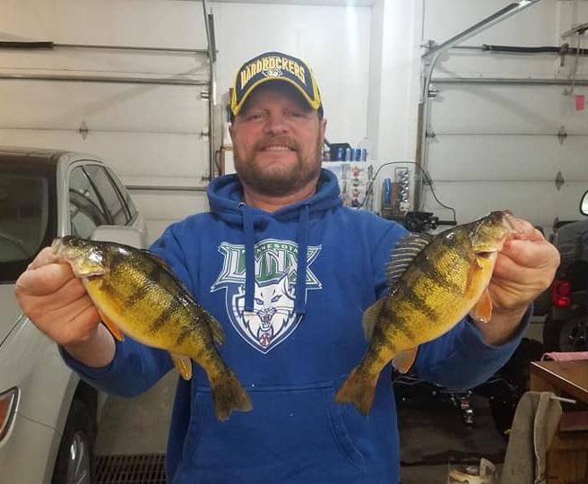

ABOUT

I started Brian Gagnon Landscaping in 1998. While growing up I worked in the sod
and landscape industry. Eventually the company I worked for shut down and I decided that it
I wanted to try it on his own as I enjoyed landscape construction. I was able to slowly build
a web of customers that has been able to sustain my business. My key to success is that all of my
work is always about the customer! In my time outside of work I enjoy fishing, doing work around my house
and spending time with my family.